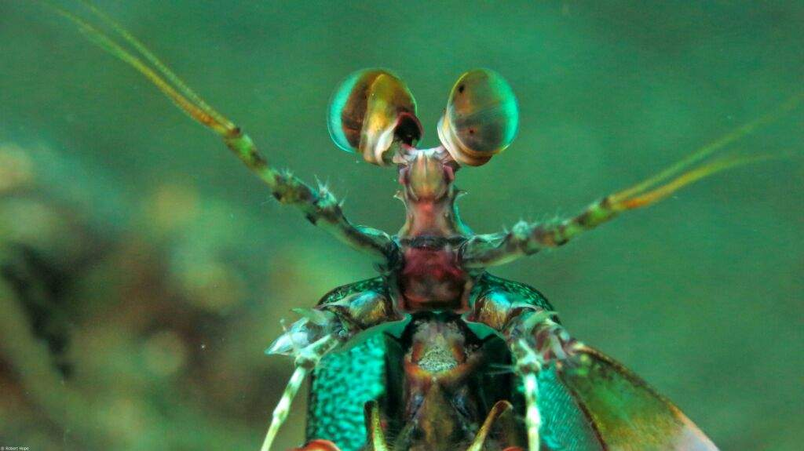
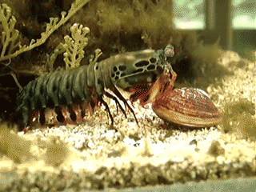
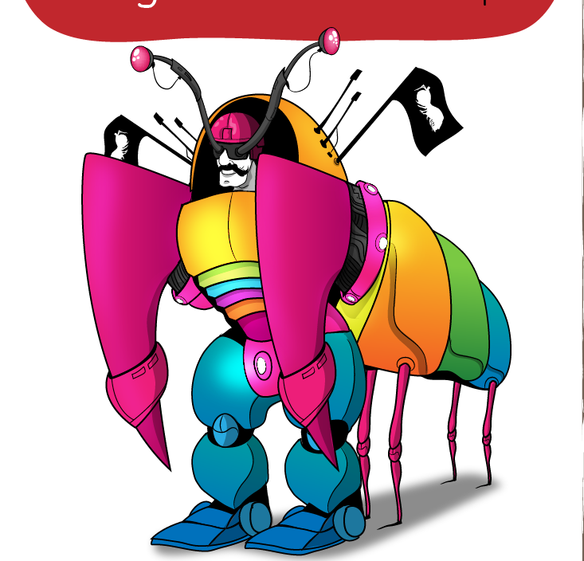
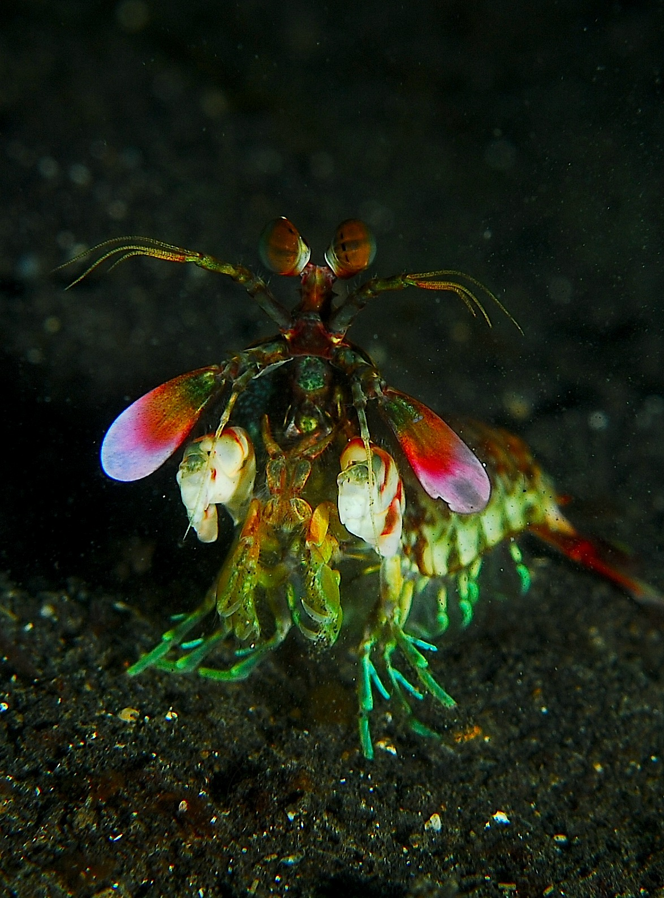

Conheça o Stomatopoda
Informações Gerais
Nome Científico: Odontodactylus scyllarus
Nome Popular: Lacraia-do-mar
Classificação:
| Reino: | Animalia |
|---|---|
| Filo: | Arthropoda |
| Subfilo: | Crustacea |
| Classe: | Malacostraca |
| Subclasse: | Holopocarida |
| Ordem: | Stomatopoda |
Fatos sobre o Stomatopoda
Um arco-iris bem diferente!
Possuem 16 tipos de cones receptores de cores diferentes. O que permite a eles verem 4 vezes mais cores que um ser humano comum, que que possui apenas 3 tipo cones receptores de cores.
O "Massaranduba" dos mares.
Um dos maiores pesadelos dos mares, extremamente violento, possui duas patas dianteiras capases de desferirem socos que atingem velocidades de até 80km/h, e são extremamente fortes. Durante o movimento delas a água ao redor chega a ferver, devido um processo chamado super cavitação, que causa uma onda de choque que é capaz de matar sua presa mesmo que erre o alvo.
Mimetismo humano
Há estudos de sobre o material das garras para a utilização em equipamentos de segurança de uso em combates. Isso devido ao fato da resiliência do tecido de suas pontentes patas.
O melhor pet, só que não!
Aquaristas não costumam criar a lacraia-do-mar devido a sua tendência de espancar as outras criaturas que dividem o taque com ele. E pelo fato de poderem rachar os vidros dos aquários.